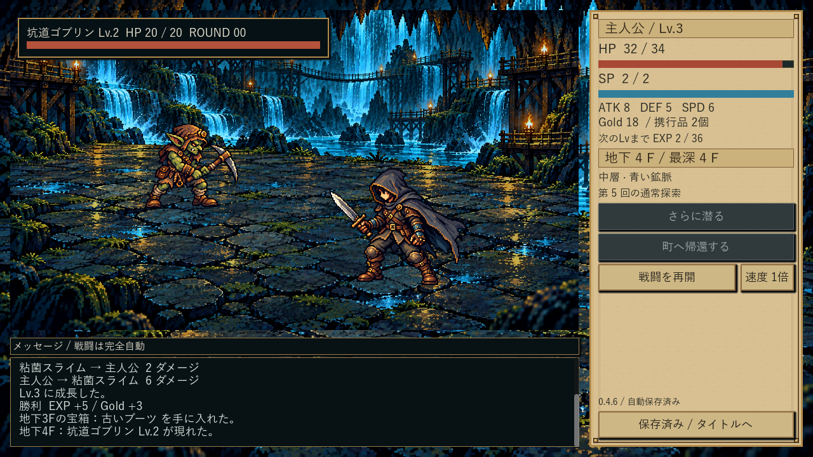

Dive In Under — 初回通常化とボス床面修正
0.4.6 / e7c63c6 / Windows x64
最初から1Fの通常探索と帰還。旧セーブの育成・所持品を保持。ボスの崖際の足場を広い連続石床へ修正しました。状態4効果は未実装、工程1全体は未完了です。
ボス：欠点と修正
同じ実EXEの通常とボス

通常：左奥の敵、右手前の主人公、右操作、下ログボス：同じ896×504の戦闘場で床の連続性を比較初回帰還・通常死亡
旧セーブとボタン
タイトルと10F突破
827テスト、1000seed全件突破・厳密再現一致。最終EXE286操作と3プロセス再開、旧6種の移行と再開を隔離描画／ヘッドレス双方で確認。詳細と制約。旧版比較の履歴